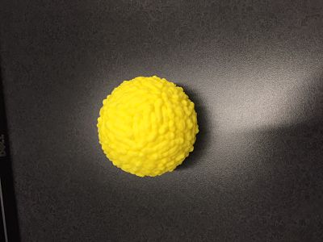
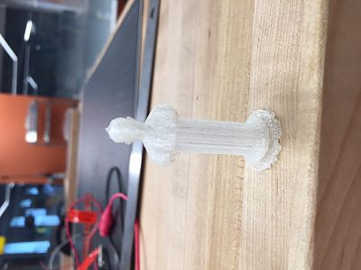
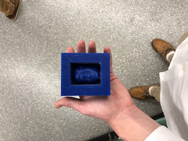

Week 5
3D Printing
This Rotation we used the 3D Printer. It was fun. We designd things on meshmixer then uploaded it onto the printers. The 3D printers printed the designs out of plastic. We also learned about some of the history of 3D printing which was crazy. I made a statue with my head on it. I also made a ball that couldn't be made subtractively because it was hollow. 3D printing is wild stuff.
The rules with the makerbot is that the design must have to be able to be made additevly. The maker bot makes things additively. This is an advantage because you can decide what height and width you want your project to be, whereas a subtractive machine has to cut out of a peice of material. The makerbot also doesnt waste materials like a subtractive one would.


